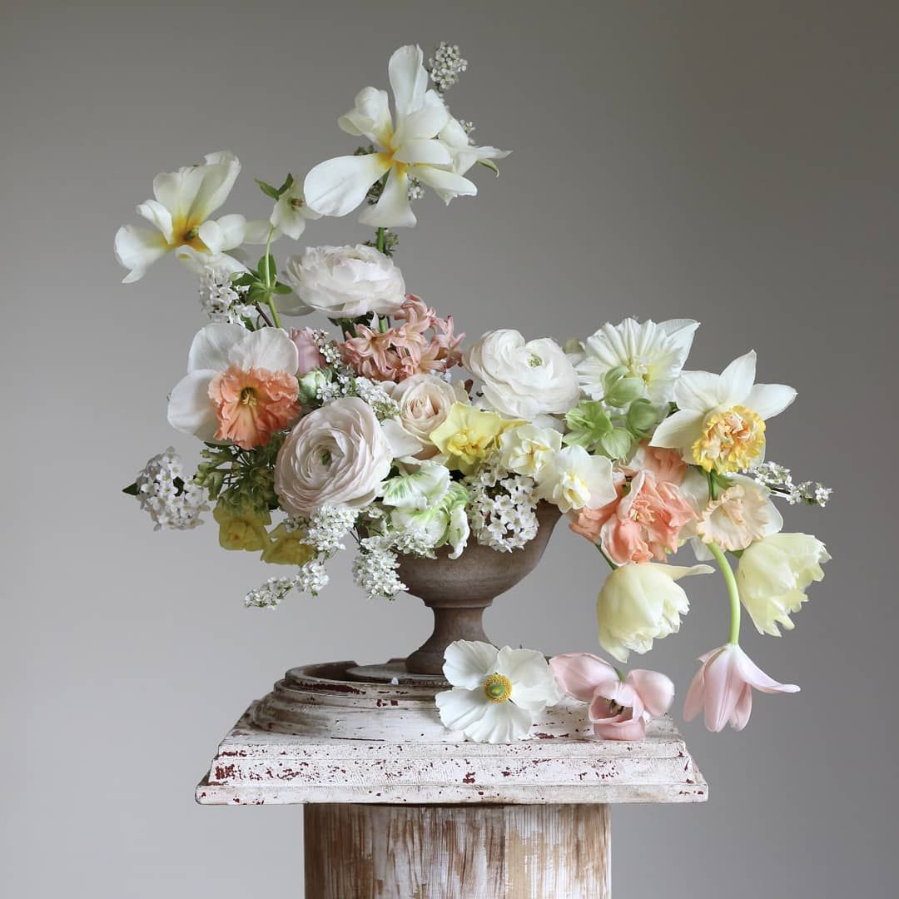
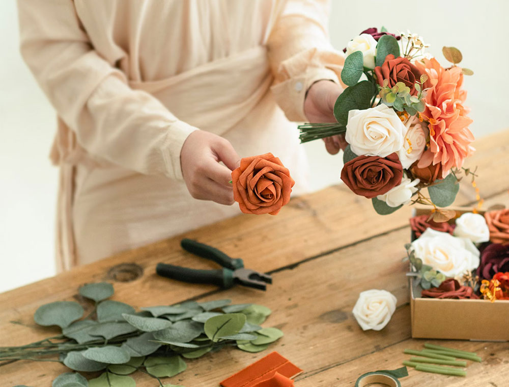

Create Stunning Floral Displays...
Explore the art of floral arrangement and unleash your creativity with these inspiring ideas, techniques, and design principles:
Types of Floral Arrangements:

- Bouquets: Learn how to assemble beautiful bouquets using a variety of flowers, foliage, and fillers. Experiment with different shapes, sizes, and color combinations to create eye- catching arrangements.
- Centerpieces:Discover tips for crafting striking centerpieces for tables and special occasions. Incorporate seasonal blooms, candles, or decorative elements to enhance the centerpiece's visual impact.
- Wreaths: Master the art of wreath-making with fresh flowers and greenery. Design wreaths for doors, walls, or as decorative accents for weddings and events.
Design Principles:
- Color Harmony:Explore color theory and combinations to create harmonious floral arrangements. Experiment with complementary, analogous, or monochromatic color schemes to evoke different moods and aesthetics.
- Balance and Proportion:Learn how to achieve visual balance and proportion in floral designs. Use tall focal flowers, medium-sized fillers, and trailing vines to create a balanced composition.
- Texture and Contrast:Incorporate a variety of textures, from delicate blooms to sturdy foliage, to add interest and depth to your floral arrangements. Contrast light and dark elements for dramatic effects.
Techniques and Tips:
- Cutting and Conditioning: Properly prepare flowers by cutting stems at an angle and placing them in water with floral preservative to prolong freshness.
- Layering and Grouping:Arrange flowers in layers, grouping similar blooms together for impact. Experiment with different heights and angles to create dynamic arrangements.
- Vase Selection:Choose suitable containers for your floral arrangements, considering shape, size, and material. Use clear glass vases to showcase stems or opt for rustic containers for a natural look.
Seasonal Inspiration:

- Draw inspiration from seasonal blooms and foliage for themed floral arrangements. Embrace the colors and textures of each season to create festive displays for holidays and special occasions.
DIY Tutorials:

- Access step-by-step tutorials and videos demonstrating various floral arrangement techniques. Learn how to wire flowers, create hand-tied bouquets, or design intricate floral centerpieces.
Immerse yourself in the world of floral design and transform fresh flowers into stunning works of art. Whether you're a novice or seasoned enthusiast, our floral arrangement tips and ideas will elevate your creativity and bring joy through beautiful floral displays.